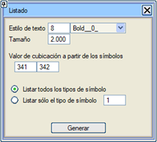
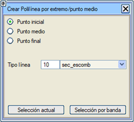
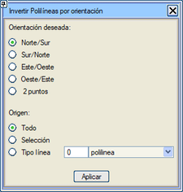

Kapalı Alan İçindeki Noktalar
Her kapalı çizgi için, içinde bulunan her sembol için bir satır yazan .csv formatında bir liste oluşturur ve aşağıdaki bilgileri içerir:
kapalı_alan_no; sembol_no; sembol_özniteliği; kapalı_alan_hacmi; kapalı_alan_2D_alanı

Uç/Orta Noktadan Poliline Oluştur
Bu araç, seçimde bulunan veya aracın kendisinden bir bant ile seçilen bir dizi çizginin başlangıç noktalarını, orta noktalarını veya bitiş noktalarını birleştirerek polilineler oluşturmayı sağlar.
Polilinenin, seçilen nesnelerin sırasına göre oluşturulduğunu dikkate almak gerekir, bu nedenle örneğin seçim bandına doğru yönü vermek önemlidir.

Yönelime Göre Polilineleri Ters Çevir
Bu araç, belirtilen polilineleri (seçimle, belirli bir tipten veya çizilmiş olan tümü), ana yönlere göre veya iki nokta ile tanımlanan bir yönelime göre belirli bir yöne sahip olmaları için gerekirse ters çevirir.

|